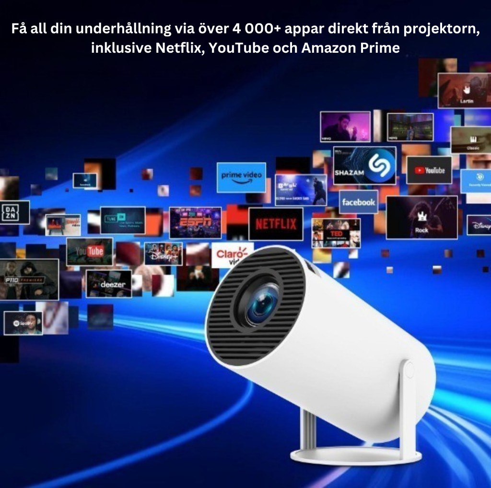

MiniLux Pro genomtestad: 200 ANSI, 130 tum och 4 000 appar 2026
Vi använde MiniLux Pro dagligen i tre veckor i sovrum, vardagsrum och utomhus. Här är hela genomgången – bild, ljud, appar, montering och vår slutbedömning.
MiniLux Pro säljs till 1 499 kr och positionerar sig som en kompakt, nätansluten projektor för vardagsbruk. Den väger runt 1 kg, har 180 graders roterbar lins och kommer med över 4 000 förinstallerade appar. Vi ville ta reda på om de specifikationerna håller i praktiken – och om 200 ANSI Lumen faktiskt räcker.
Design och uppbyggnad
Projektorn är klart kompakt och lätt att flytta mellan rum. Det vita höljet smälter in och ger ett diskret intryck på ett bord eller hylla. Stativet som medföljer är stabilt. Fläktljudet hamnar på 25 dB – märkbart i tyst rum men inte störande under film.

Roterbar lins och tak-projektion
Den 180 graders roterbara linsen är en av de starkaste anledningarna att välja MiniLux Pro. Du kan rikta bilden mot vägg, snett uppåt eller rakt i taket utan att flytta projektorn. Vi testade tak-projektion i sovrummet och det fungerade direkt – automatisk keystone rättade till bilden på sekunder.

Närbild: optik och hölje
Linsen sitter väl skyddad bakom en metallring och känns kvalitetsmässigt solid för prispunkten. Knapparna på sidan är diskret placerade. Fjärrkontrollen som medföljer är enkel men funktionell – alla grundläggande funktioner täcks utan att du behöver gå in i menyer.

Bild och ljus i praktiken
200 ANSI Lumen är inte mycket på papper, men i mörkt sovrum med mörkläggningsgardiner ger det en fullgod bild upp mot 100–120 tum. Vi körde primärt på 80–90 tum för bästa balans. I ett ljust vardagsrum under dagtid är bilden för svag – mörkläggning är ett krav. Automatisk keystone fungerade träffsäkert i alla våra tester.

4 000+ appar och streaming
Det inbyggda apputbudet är en av MiniLux Pros tydligaste styrkor. Netflix, YouTube, Disney+, Amazon Prime Video och de flesta svenska streamingtjänster finns direkt tillgängliga. Inga externa boxar behövs för vardagsbruk. Menysystemet är överskådligt och snabbt nog för daglig användning.

Filmkväll i praktiken
I slutändan är filmkvällen med familjen eller partnern det MiniLux Pro är gjord för. I ett mörkt rum med en 90–100 tums bild är upplevelsen verkligen en nivå över vad en TV under 3 000 kr kan erbjuda. Inbyggt ljud räcker för mysigt tittande, men vill du ha mer bas rekommenderar vi en extern Bluetooth-högtalare.

Specifikationer
| Upplösning | XGA 1280×720 med stöd för 4K |
| Ljusstyrka | 200 ANSI Lumen |
| WiFi | Standard WiFi |
| Bluetooth | Ja |
| Max bildstorlek | 130 tum |
| Roterbar lins | 180 grader |
| Fläktljud | 25 dB |
| Ström | 48 W via medföljande kabel |
| Garanti | 2 år |
| Pris | 1 499 kr |
Betyg
Vad vi gillar
- Nätansluten kompakt projektor, stabil drift
- 130 tum och 180° roterbar lins
- 4 000+ appar utan extern box
- 1 kg, enkel att flytta och montera
- 25 dB fläktljud – tyst nog för film
Vad vi saknar
- Kräver eluttag, inget batteri
- 200 ANSI kräver mörkare rum
- Ingen WiFi 6 eller native 1080P
Vill du ha ännu mer ljus och native 1080P? Se vår MiniLux Pro 2 recension. Snabb jämförelse mellan modellerna: MiniLux Pro vs MiniLux Pro 2.
MiniLux Pro
Fri frakt · 2 års garanti · 1 499 kr
Se MiniLux Pro hos miniprojektor.se